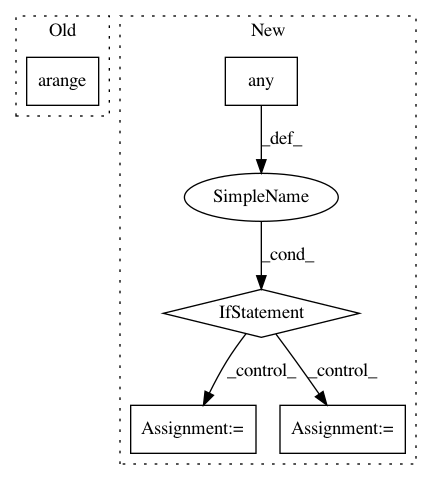

121e8301283c9aae98463cd22f965bd670b4e36d,dipy/reconst/csdeconv.py,,forward_sdt_deconv_mat,#Any#Any#,315
Before Change
i = 0
for l in np.arange(0, sh_order + 1, 2):
for m in np.arange(-l, l + 1):
b[i] = sdt[l / 2]
bb[i] = frt[l / 2]
i = i + 1
After Change
Funk-Radon Transform (FRT) matrix
if np.any(n % 2):
raise ValueError("n has odd degrees, expecting only even degrees")
n_degrees = n.max() // 2 + 1
sdt = np.zeros(n_degrees) // SDT matrix
frt = np.zeros(n_degrees) // FRT (Funk-Radon transform) q-ball matrix
b = np.zeros(len(n))
bb = np.zeros(len(n))
for l in np.arange(0, n_degrees*2, 2):
sharp = quad(lambda z: lpn(l, z)[0][-1] * np.sqrt(1 / (1 - (1 - ratio) * z * z)), -1., 1.)
sdt[l / 2] = sharp[0]
frt[l / 2] = 2 * np.pi * lpn(l, 0)[0][-1]
idx = n // 2
b = sdt[idx]
bb = frt[idx]
return np.diag(b), np.diag(bb)
In pattern: SUPERPATTERN
Frequency: 3
Non-data size: 5
Instances
Project Name: nipy/dipy
Commit Name: 121e8301283c9aae98463cd22f965bd670b4e36d
Time: 2013-11-14
Author: mrbago@gmail.com
File Name: dipy/reconst/csdeconv.py
Class Name:
Method Name: forward_sdt_deconv_mat
Project Name: acoular/acoular
Commit Name: 276f8fc3fe9a7424bae6585ed4453190e2a70815
Time: 2018-05-02
Author: tom.j.gensch@campus.tu-berlin.de
File Name: acoular/fbeamform.py
Class Name: PointSpreadFunction
Method Name: _get_psf
Project Name: acoular/acoular
Commit Name: 4b8dec5e7199ad302c52bf9eb6914a170491334c
Time: 2018-05-03
Author: tom.j.gensch@campus.tu-berlin.de
File Name: acoular/fbeamform.py
Class Name: PointSpreadFunction
Method Name: _get_psf